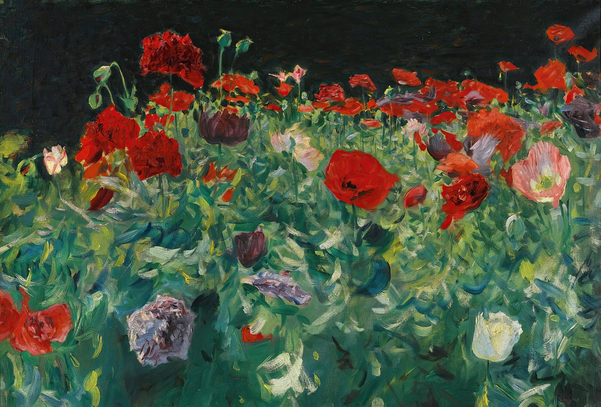

Home
Watercolor paintings
Drawings
×
Mrs. Carl Meyer And Her Children
Portrait of Lady Agnew of Lochnaw
Helen Sears
Carnation, Lily, Lily, Rose
Madame Paul Escudier
Miss Mathilde Townsend
Self-portrait
Portrait of Arthur, Duke of Connaught
Madame Errazuriz
Mrs. Hugh Hammersley
Madame la Comtesse Jacques de Ganay
Portrait of Charlotte Cram
Portrait of Mrs. J.P. Morgan, Jr.
Dorothy
Ellen Terry as Lady Macbeth
Grace Elvina, Marchioness Curzon of Kedleston
Ellen Sears Amory Anderson Curtis
La Carmencita
Lady and Child Asleep in a Punt under the Willows
Ena and Betty, daughters of Asher
and Mrs. Wertheimer
Portrait Of Millicent Leveson-Gower, Duchess Of Sutherland
Mrs. Fiske Warren and Her Daughter Rachel
Mrs. George Swinton
Morning Walk
Mrs. Hugh Smith
Betty Wertheimer
Mosquito Nets
Mrs. William George Raphael
The Birthday Party
Margaret Stuyvesant Rutherfurd White
Miss Grace Woodhouse
Mrs. William Crowninshield Endicott Jr.
Le Verre De Porto

Poppies
The Sitwell Family
Portrait Of Miss Katherine Elizabeth Lewis
The Breakfast Table
Madame X
Madame Gautreau Drinking a Toast
Portrait of Lisa Colt Curtis
Lady Helen Vincent, Viscountess d’Abernon
The Wyndham Sisters; Lady Elcho, Mrs. Adeane, and Mrs. Tennant
Constance Wynne-Roberts, Mrs. Ernest Hills Of Redleaf
Egyptian Woman
Ellen Peabody Endicott
Essie, Ruby und Ferdinand Wertheimer
Mary Eliza Mead
Elizabeth Winthrop Chanler
Eleanora O’Donnell Iselin
Mrs. Albert Vickers
Mr. and Mrs. I. N. Phelps Stokes
Nonchaloir
Portrait Of Mrs. Edward L. Davis And Her Son, Livingston Davis
Lady Eden
Elizabeth Allen Marquand
Fumée D’ambre Gris
Lady With The Rose
Lord Ribblesdale
Leonard Wood
Duchess Louise Margaret of Connaught
Madame Paul Poirson
Portrait Of Mrs A Lawrence Rotch
Dr. Pozzi at Home
Portrait of Woodrow Wilson
Portrait of James Whitcomb Riley
Charles Stewart, Sixth Marquess Of Londonderry
Man Wearing Laurels
The Rialto, Venice
On his Holidays, Norway
Tyrolese Interior
Hall of the Grand Council, Doge’s Palace, Venice
Egyptian Indigo Dyers
Street in Venice
Courtyard, Tetuan, Morocco
Pavement, Cairo
Moroccan Street Scene
Girl Fishing
River Bank, near Oxford
Ilex Wood. Majorca
Home Fields
An Out of Doors Study
Landscape with Women in Foreground
Trout Stream in the Tyrol
Lake O’Hara
A Waterfall
.jpg)
.jpg)
 (1892).jpg)
.jpg)
 (1882).jpg)
.jpg)
.jpg)
.jpg)

.jpg)

.jpg)

 (ca 1905).jpg)
.jpg)
.jpg)
.jpg)
 (1903).jpg)
.jpg)
.jpg)
.jpg)
 (1904).jpg)
 And Her Daughter Rachel (1903).jpg)
 (1897).jpg)
.jpg)
.jpg)
.jpg)
.jpg)
.jpg)
.jpg)
 (1883).jpg)
.jpg)
.jpg)
.jpg)

.jpg)
.jpg)
 (1884).jpg)
.jpg)
.jpg)
.jpg)
.jpg)
.jpg)
.jpg)
 (1901).jpg)

.jpg)
.jpg)
 (1888).jpg)
 (1884).jpg)
.jpg)
 (1911).jpg)
.jpg)

.jpg)
 (1880).jpg)
 (1882).jpg)
.jpg)
.jpg)
, née Princess of Prussia. (1908).jpg)
.jpg)
.jpg)
.jpg)
, American President (1917).jpg)
.jpg)

.jpg)
.jpg)
.jpg)
.jpg)
.jpg)
.jpg)
.jpg)
.jpg)
.jpg)
.jpg)
.jpg)
.jpg)
.jpg)
.jpg)
.jpg)
.jpg)
.jpg)
.jpg)
.jpg)